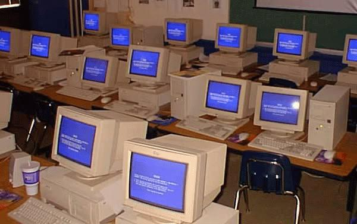

Control

Grupo 13
Rocio Lara
Sofia Goldenberg
Trinidad Astorquiza
Leen Alhabcha
Valentina Caro
Isidora Jimenéz
PAPER
AUTOR_________________________James R. Beniger
AÑO__________________1989
Con Control revolution se refiere a cómo las empresas enfrentaron una crisis de control en el consumo masivo durante la Revolución Industrial.
A medida que la producción se aceleraba, las empresas necesitaban nuevas estrategias para gestionar la demanda y mantener el flujo de productos.
Beniger sostiene que la aceleración de la producción industrial superó la capacidad de las empresas para controlar la distribución y el consumo de bienes. Esto llevó a una "crisis de control" en el consumo, donde las empresas debían encontrar formas de estimular y gestionar la demanda.
Adentrandose en el texto vemos el ejemplo de la fabrica de galletas “Uneeda biscuits” que en plena revolución industrial buscaba destacar entre las
demás empresas jugando con formas, empaquetamientos y marketing para sus productos, con esto creando una identidad para la empresa.
¿QUE RESCATAMOS DEL PAPER?
————————————————————————————————————————————————————————
INNOVACIÓN
MARKETING
CONTROL
AUTOR____________________________James R. Beniger
James R. Beginer fue un sociologo e historiador estadounidense, es conocido por la obra la cual estamos trabajando; "The Control Revolution" (1986).
Su trabajo es clave para entender el origen de la sociedad de la información.